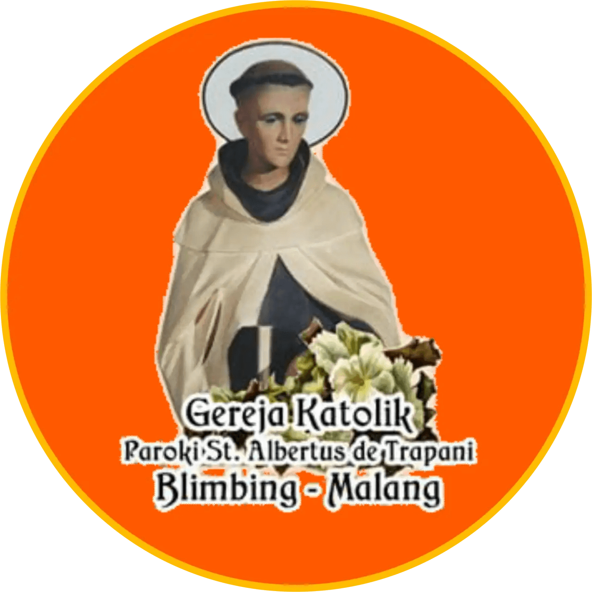
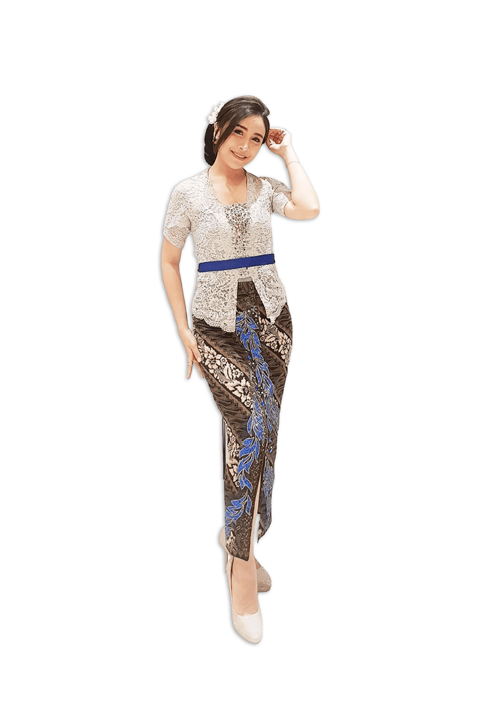
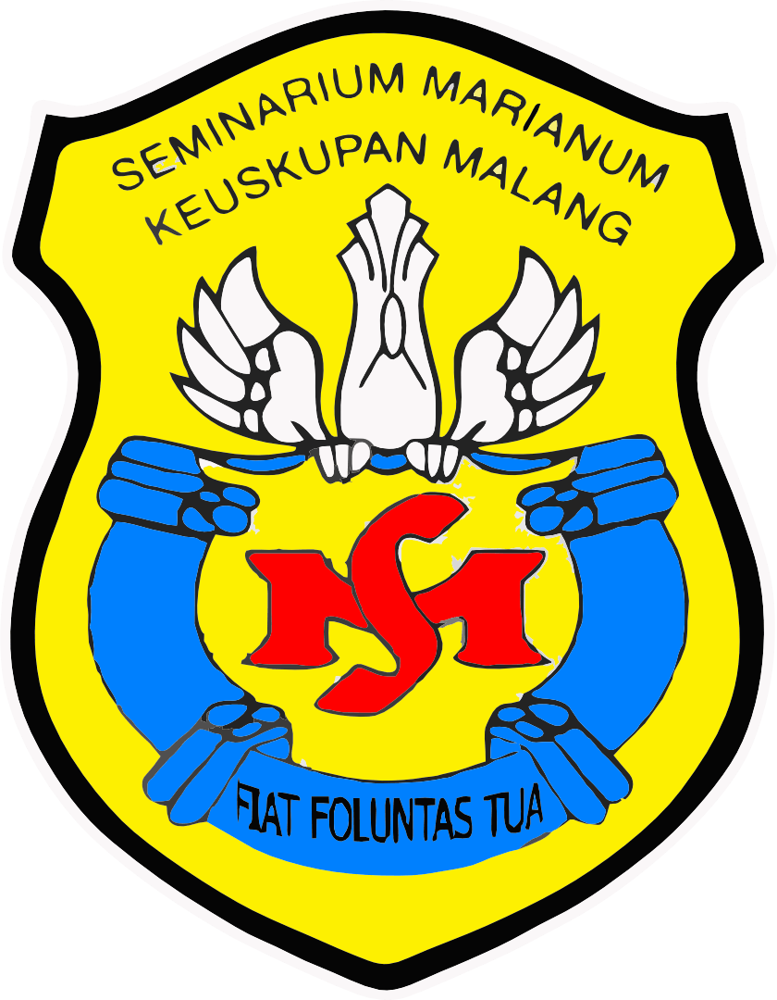

Projects
ESAC Inventory Book Apps
Google Spreadsheet
ESAC Inventory Book Apps is an MS Office-based app. ESAC Inventory Book Apps has been
built-in with Google Spreadsheet integrated with Google Apps Script.
Click button below for more specific of apps information.
Click button below for more specific of apps information.

Gereja Katolik Paroki St. Albertus de Trapani
WordPress
Gereja Katolik Paroki St. Albertus de Trapani is an official church website. This website
has been built-in with WordPress and this website has been indexed in Google Search.
Click button below for more specific of apps information.
Click button below for more specific of apps information.
Kebun Sayur Hidroponik Brayat Minulyo
WordPress, WooCommerce
Kebun Sayur Hidroponik Brayat Minulyo is an e-commerce platform that sells vegetables using
hydroponic. Besides selling vegetables, they also have services for the community &
apprenticeship programs for students in the fields of plantations and agriculture.
Click button below for more specific of apps information.
Click button below for more specific of apps information.
Keuskupan Malang
WordPress
The Diocese of Malang is suffragan in the Ecclesiastical Province of the Archdiocese of
Semarang. This website is the official website of the Diocese of Malang. This website
has been built-in with WordPress and this website has been indexed in Google Search.
Click button below for more specific of apps information.
Click button below for more specific of apps information.
Komik Pembelajaran Matematika
WordPress Free Version (WordPress.org)
Komik Pembelajaran Matematika is an E-Learning website using comics as a medium of
interaction. This website has been built-in WordPress.org, a free version of WordPress.
Click button below for more specific of apps information.
Click button below for more specific of apps information.
Kunci Ibadah Utama
Visual Basic 6, Excel
Kunci Ibadah Utama is a Retail app for manufacturing vendors. This app has been built-in
with Visual Basic 6 & Excel for accounting.
Click button below for more specific of apps information.
Click button below for more specific of apps information.

MC TITI SWASTI
WordPress
MC TITI SWASTI is a personal website for her carrier as a Master of Ceremony. This website
is a simple brand web design. The website content includes curriculum vitae, experience,
personal data, etc.
Click button below for more specific of apps information.
Click button below for more specific of apps information.

Seminari Marianum Probolinggo
WordPress
Seminarium Marianum is a place for the education of mid-level priest candidates in the
Diocese of Malang which has a long history. It is from this Marianum Seminarium that many
priests, both Diocesan priests and Ordo/congregations. This website has been built-in with
WordPress.
Click button below for more specific of apps information.
Click button below for more specific of apps information.